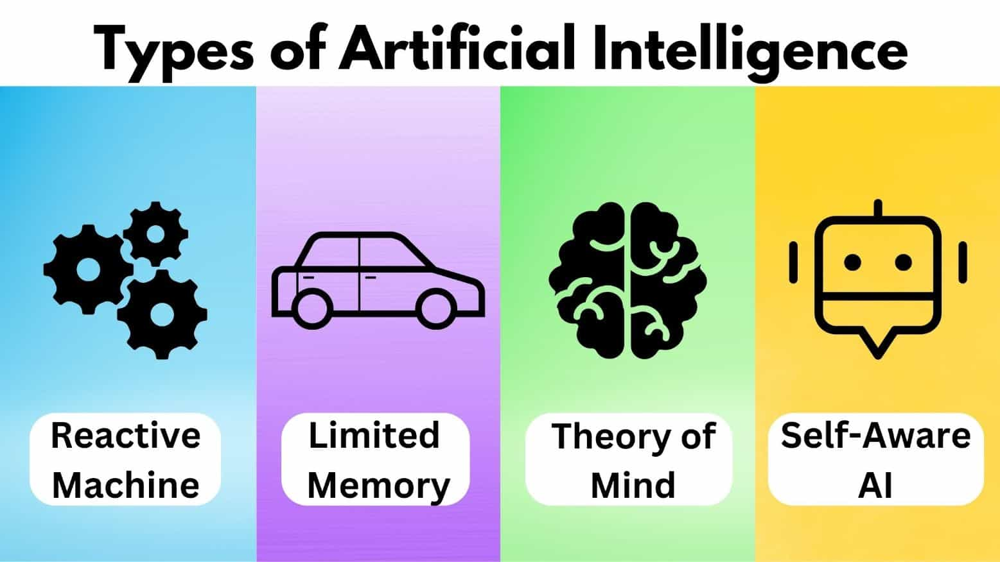
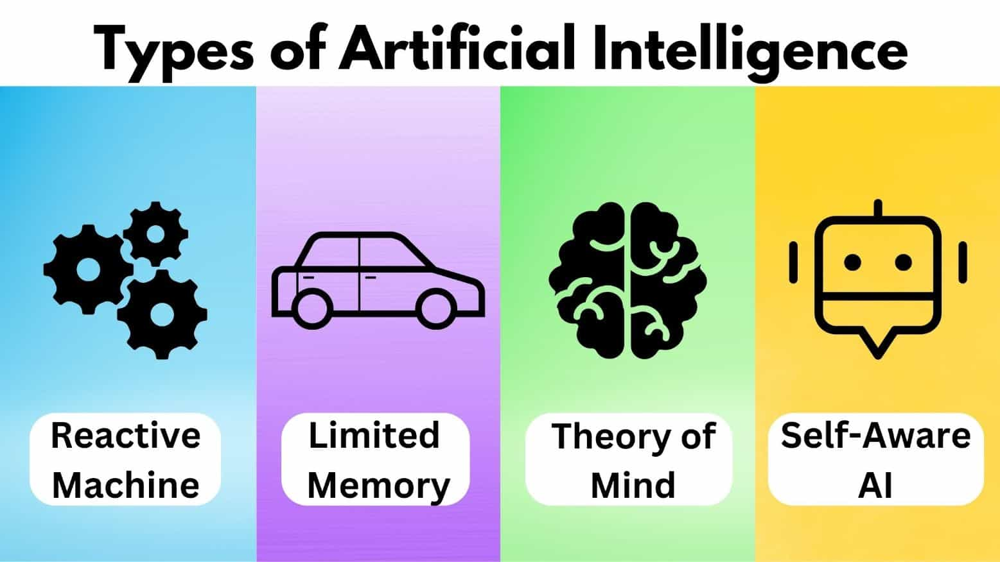

Types of Artificial Intelligence
 

Artificial Intelligence (AI) can be broadly classified into many sorts according to the jobs that they can accomplish and their level of complexity. The answer to the query, "How intelligent is artificial intelligence?" can be found by comprehending these kinds. Artificial Intelligence (AI) systems come in a variety of forms, from basic, focused applications that do particular tasks to more sophisticated, though theoretical, models that resemble human cognition and decision-making.
1. Weak AI, or narrow AI: The most common kind of AI in use today is called narrow AI, and it is created to carry out particular tasks without having general intelligence or awareness. Certain tasks, such language processing, image identification, and Go and chess play, are domains in which these systems shine. For instance, voice instructions are understood and responded to by virtual assistants such as Siri and Alexa using Narrow AI; nevertheless, these assistants are limited to the tasks that are put into them. The statement "Narrow AI systems are effective at executing well-defined tasks but lack the generalizability required for broader, context-dependent applications" (Pan et al., 2019) is emphasized by Pan et al. Narrow AI lacks full thinking and reasoning, yet it can do better than humans in certain specific jobs because it only works within the constraints of its programming and data training.
2. Strong AI, or general AI: Systems that can comprehend, learn, and apply information to a variety of activities, much like humans, are referred to as general artificial intelligence (AI). Without needing specialized training for every work, this kind of AI would be able to reason, solve complicated puzzles, and adapt to new environments. General artificial intelligence is still theoretical and has not yet been implemented. The difficulty is in imitating the adaptability and depth of knowledge of the human brain, which encompasses not only information processing but also emotional intelligence, creativity, and moral reasoning. However, there are still many philosophical, ethical, and technical obstacles in the way of researchers' efforts to develop general artificial intelligence.
3. AI with superintelligence: Superintelligent artificial intelligence (AI) is the name given to a fictitious future AI that is superior to humans in every way, including creativity, problem-solving, and emotional intelligence. Not only could this kind of AI outperform humans at tasks, but it may also develop on its own. Superintelligent AI systems have the ability to make judgments that are beyond human knowledge or control, which presents serious ethical and existential concerns. According to Bostrom (2014), there are a lot of risks associated with developing superintelligent AI, thus safety precautions and alignment with human values must be carefully considered. Superintelligent AI is still entirely theoretical at this point, but it's important to keep it in mind while talking about AI's future.
In conclusion, the intelligence of artificial intelligence varies greatly based on its kind. Current applications of AI are dominated by narrow AI, which exhibits outstanding specialized intelligence but is constrained by its lack of contextual knowledge and generalizability. Although more intelligent in theory, general artificial intelligence has not yet been developed and faces significant obstacles. While entirely theoretical, superintelligent AI is the highest level of AI intelligence, but it also carries the greatest possible risks. The progression of artificial intelligence from narrow AI to superintelligent AI illustrates how this field is changing and emphasizes how difficult it is to pinpoint what constitutes actual AI intelligence.